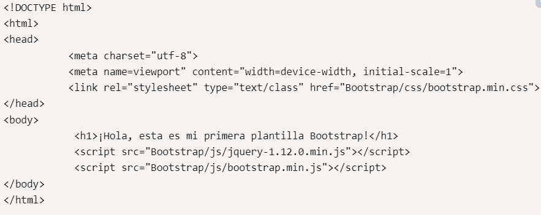

Descargar e instalar Bootstrap
Debido a que Twitter lanzó Bootstrap como un software libre, su descarga y uso no tienen ningún coste. Aquellos desarrolladores web con más experiencia también se benefician del estatus open source de Bootstrap, pues pueden adaptar y modificar el framework de acuerdo a sus necesidades. En la siguiente guía presentamos las medidas necesarias para utilizar plantillas de Bootstrap en JavaScript y CSS.
- Visita la página oficial de Bootstrap y descarga el pack “Bootstrap”, que contiene los archivos CSS y JavaScript (en versión compilada y reducida), así como las fuentes y el tema opcional.
- Descomprime el archivo y copia el “Bootstrap File” en el directorio deseado.
- Obtendrás las carpetas “CSS”, “fonts” y “js”. La carpeta “fonts” contiene más de 250 iconos
en forma de tipografía de la
fuente Glyphicons Halflings, que no tiene ningún coste para los usuarios de Bootstrap. Los
archivos de las carpetas
“CSS” y “js” contienen:
- bootstrap.css: código CSS en formato legible
- bootstrap.min.css: código CSS reducido. Se ha eliminado contenido irrelevante (como espacios) para facilitar su interpretación
- bootstrap.css.map: contiene mapas de fuente CSS, que facilitan la búsqueda de datos originales en formato LESS
- bootstrap-theme.css: bootstrap-theme.css
- bootstrap-theme.min.css: código reducido de los temas
- bootstrap.js: código JavaScript en formato legible
- bootstrap.min.js: código JavaScript reducido
- Si deseas utilizar elementos de JavaScript, puedes descargar adicionalmente la amplia biblioteca JavaScript de funciones jQuery en jquery.com.
- Una vez se han descargado e identificado todos los componentes, puedes empezar a trabajar con el framework.
- Para crear una plantilla de Bootstrap desde un documento HTML, es necesario implementar archivos CSS y JavaScript en el documento. Esto se logra especificando el directorio donde se encuentran las carpetas. Es aconsejable incluir JavaScript al final del documento, pues de lo contrario podrías estar alargando los tiempos de carga de tu página web. El código tendrá entonces este aspecto: 
- Una plantilla Bootstrap puede ser personalizada libremente. En la página web oficial encontrarás los diferentes códigos para configurar tipografías, botones, el Bootstrap grid, etc.
La importancia de los conocimientos previos en programación
Aún cuando Bootstrap cuenta con contenidos prediseñados, es necesario tener conocimientos básicos en HTML y CSS para poder configurarlos. Incluso programadores experimentados pueden necesitar algo de tiempo para acomodarse a la interfaz, aunque suele tener su recompensa. Para quienes no tengan el tiempo o los medios, existen bibliotecas de plantillas Bootstrap creadas por otros usuarios y que están disponibles de forma gratuita o de pago para ser descargadas. Quien trabaje con HTML, CSS y JavaScript reconocerá rápidamente las ventajas de trabajar con este framework.